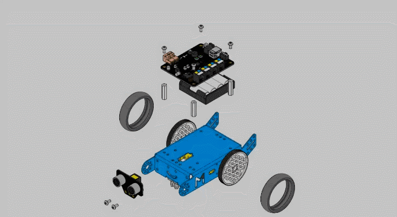
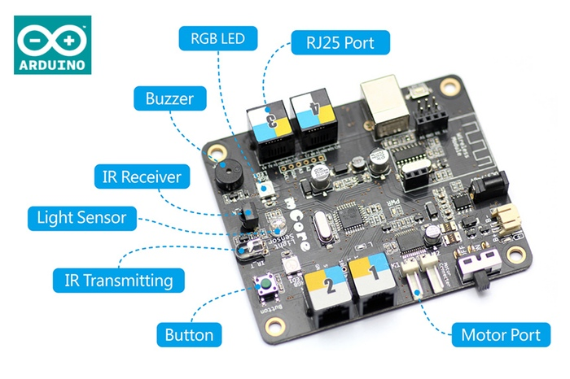
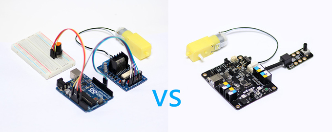

Arduino: El corazón de mBot
El kit es fácil de montar (instrucciones), pero si nos fijamos el corazon es la placa de Arduino:

Fuente: http://makeblock.es/
Nos tenemos que fijar en estos componentes de la placa:

Fuente: http://makeblock.es/
- Los R25 donde montaremos los diferentes componentes externos, tienen colores para indicar qué componentes son compatibles.
- Transmisor de Infra Rojos para interactuar con el mando a distancia, un elemento de interacción, pero ojo: común a todos los robots que estén en el aula
- Botón que permitirá interactuar
- Puertos de motor, donde conectaremos los motores de las ruedas.
- Buzzer o pequeño altavoz, no puede hacer maravillas, sólo tonos simples
- RGB Led o luces de los tres colores básicos.
- Light Sensor o sensor de luz, que nos servirá como otra vía de interacción.
- También tiene una conexión USB para conectarse con el ordenador con un cable.
- Esta conexión USB a la vez proporciona energía. Es una opción a considerar si se nos ha agotado las pilas y queremos seguir programando.
- La conexión USB funciona también como cargador si en vez de pilas usamos la batería Litio
La ventaja de esta placa es que permite conectar directamente los motores y diferentes componentes exteriores sin necesidad de placas controladoras intermedias y con la conexión rápida RJ25, sin necesidad de placas Protoboard, mirar la diferencia entre trabajar con una placa Arduino convencional y esta:

Fuente: http://makeblock.es/

Menuda Feria 16-03-2019 por Javier Quintana Peiró - Equipo CATEDU bajo licencia Creative Commons Reconocimiento-NoComercial-CompartirIgual 4.0 Internacional License.